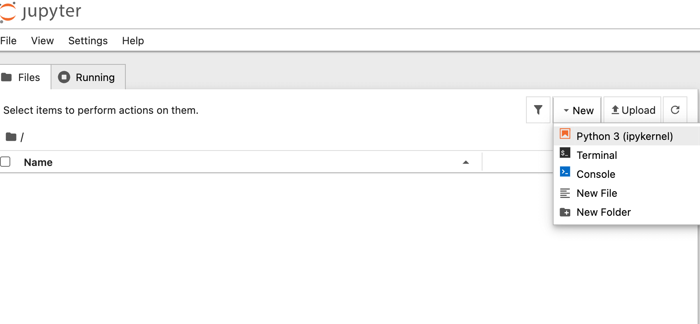
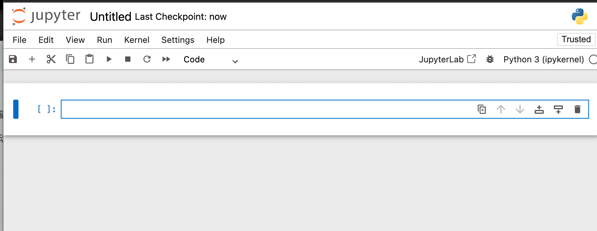
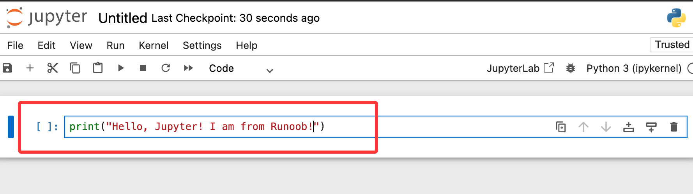
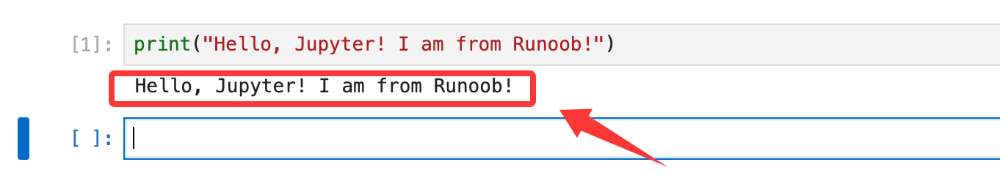
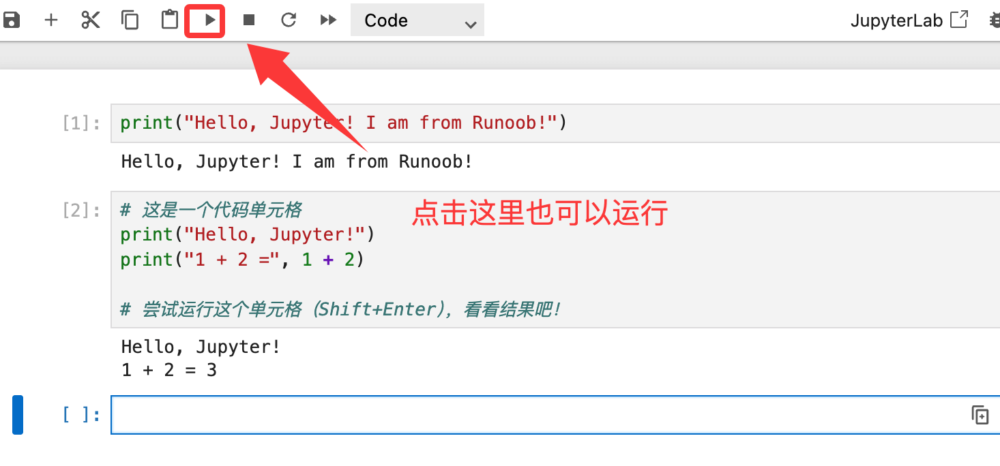
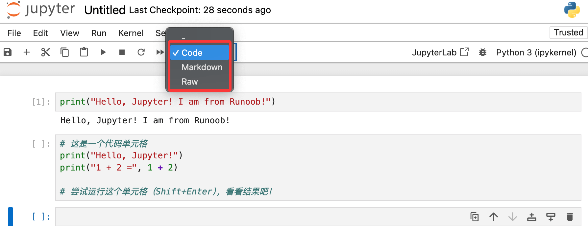
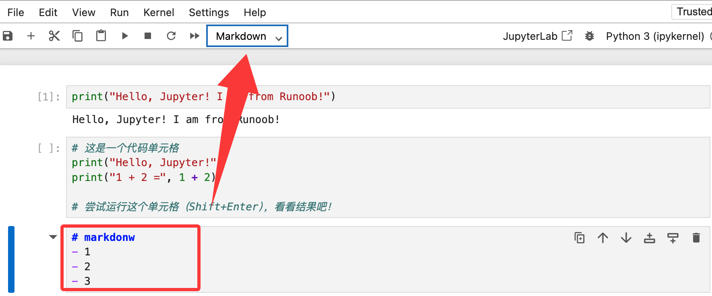
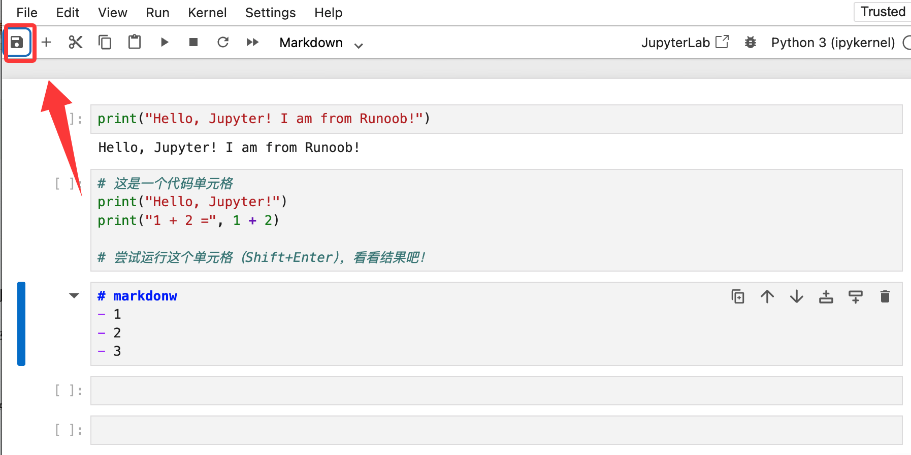

Jupyter Notebook の使い方
前の章で Jupyter Notebook のインストールを完了しました。
インストールが完了したら、すぐに起動して、このスマートノートブックがどのようなものか見てみましょう。
1. Jupyter Notebook を起動する
まず、コマンドラインで、今後ノートブックのプロジェクトファイルを保存したいディレクトリに移動します。例えば、デスクトップのmy_jupyterフォルダ内で作業したい場合：
# Windows 示例 cd C:\Users\你的用户名\Desktop\my_jupyter # macOS/Linux 示例 cd ~/Desktop/my_jupyter
次に、起動コマンドを入力します：
jupyter notebook
エンターキーを押すと、2つのことが起こります：
コマンドラインウィンドウでサーバーが実行されます（このウィンドウは閉じないでください）。

デフォルトのWebブラウザ（Chrome、Firefoxなど）が自動的に新しいページを開きます。アドレスは通常http://localhost:8888、これがJupyter Notebook のダッシュボードです

この時点で、File（ファイル）→ New（新規作成）→ Notebook（ノートブック）をクリックして notebook を作成できます。

以下の方法でも可能です。
2. 最初のノートブックを作成する
開いたブラウザページ（ダッシュボード）で：
- ページ右上隅のNewボタンをクリックします。
- ドロップダウンメニューでPython 3 (ipykernel)。

- すると、新しいブラウザタブが開きます。これは新しい空白のNotebook ドキュメントです。

3. 最初のコードを書いて実行する
今見えているのはセルです。これが Notebook の核心です。
最初のセルに入力します：
print("Hello, Jupyter! I am from サンプル!")按
Shift + Enterキーでこのセルを実行します。

セルの下に出力結果がすぐに表示されますHello, Jupyter! I am from サンプル!、同時にインターフェースが自動的に2番目の空白セルを作成します。

完了すると、新しいセルが生成されるので、以下のコードを貼り付けます：
例
print("Hello, Jupyter!")
print("1 + 2 =", 1 + 2)
# このセルを実行してみてください（Shift+Enter）、結果を見てみましょう！
期待される実行結果：
Hello, Jupyter! 1 + 2 = 3

4. セルのタイプを理解する
セルには2つの主要なモードがあります（ツールバーのドロップダウンメニューで切り替えます）：
- Code：コードの作成と実行に使用します（デフォルト）。
- Markdown：書式付きのテキスト説明の作成に使用します。例えば、
# これはタイトルですと入力してから実行（Shift+Enter）すると、大見出しとして表示されます。

新しいセルのタイプをMarkdownに変更して、と入力し、## これは私のデータ分析プロジェクトです実行して効果を確認してみてください。

5. 保存と終了
- 保存：：Notebook は自動的に定期的に保存されます。ツールバーの保存アイコン（フロッピーディスクの形）をクリックして手動で保存することもできます。ノートブックは拡張子が
.ipynbのファイルとして保存されます。 - 終了：：ブラウザのタブを閉じるだけでノートブックを閉じることができます。Jupyter サービス全体を停止するには、最初のコマンドラインウィンドウに戻り、2回押します
Ctrl + C、その後、プロンプトに従って終了を確認します。

その他の拡張